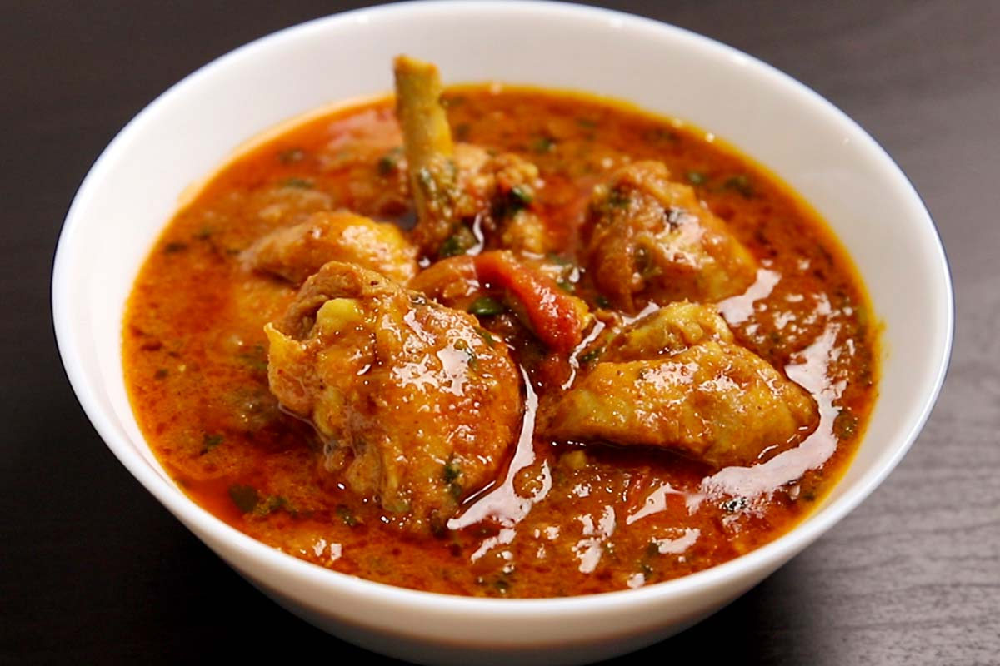
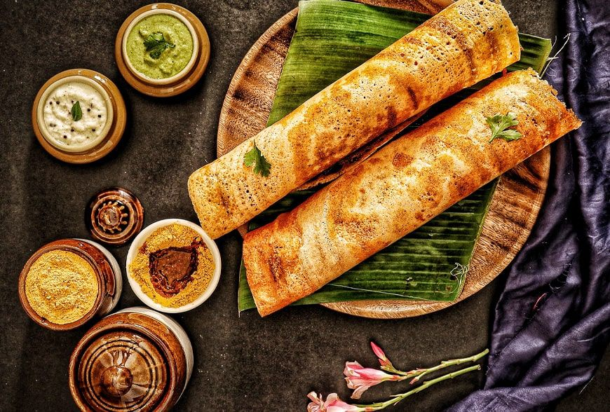

Track Your Nutrition
Nutritional Information
Indian Dishes in our Database
-
 Chhole Bhature
Chhole Bhature
A popular North Indian dish consisting of spicy chickpeas (chhole) served with fried bread (bhature). It's a hearty and flavorful meal often enjoyed with a side of yogurt or pickle.
-
 Aaloo Paratha
Aaloo Paratha
A stuffed flatbread made with whole wheat flour and mashed potatoes (aaloo). It's a comforting meal, usually served with yogurt, pickles, or curry.
-
 Chicken Curry
A rich, flavorful curry made with chicken simmered in a blend of spices and tomatoes. It's typically served with rice or bread like naan or roti.
-
 Biryani
Biryani
A fragrant rice dish made with spiced meat (usually chicken or mutton) and saffron, often garnished with fried onions and boiled eggs. It's a popular dish across India.
-
Puri Sabji
Deep-fried puris (flatbread) served with a flavorful vegetable curry, typically potatoes. It's a common breakfast or lunch dish, especially in northern India.
-
Dosa
A thin, crispy pancake made from fermented rice and lentil batter. Dosas are typically served with chutneys and sambar, making for a delicious and nutritious meal.
-
Idli
Soft and fluffy steamed rice cakes made from fermented rice and urad dal batter. Idlis are usually served with sambar and coconut chutney for breakfast or dinner.
-
Paneer Butter Masala
A creamy and flavorful curry made with cubes of paneer (Indian cottage cheese) cooked in a spiced tomato gravy with butter and cream. It's a popular vegetarian dish.
-
 Rajma Chawal
Rajma Chawal
A comforting North Indian dish consisting of kidney beans cooked in a spicy gravy, served with steamed rice. It's a staple meal in many households across India.
-
Dal Tadka
A classic lentil dish where cooked yellow dal is tempered with ghee, cumin, garlic, and other spices. It’s a flavorful and nutritious dish served with roti or rice.
-
 Samosa
Samosa
A crispy, deep-fried pastry filled with spiced potatoes, peas, and sometimes meat. Samosas are a popular snack and appetizer in India, often served with chutney.
-
 Pav Bhaji
Pav Bhaji
A Mumbai street food dish consisting of spicy mashed vegetables (bhaji) served with buttered pav (bread rolls). It's a quick and satisfying meal, perfect for any time of day.
-
 Masala Dosa
A South Indian delicacy, masala dosa is a crispy rice pancake filled with spiced mashed potatoes. It’s served with chutneys and sambar for a delicious breakfast or dinner.
-
Roti Sabji
A simple yet comforting meal consisting of soft wheat rotis (flatbreads) served with a vegetable curry (sabji). It’s a staple meal across India.
-
 Fish Curry
Fish Curry
A tangy and spicy curry made with fish simmered in a spiced gravy. It’s a popular dish in coastal regions of India, often served with rice or flatbread.
-
Keema Naan
A stuffed naan (Indian flatbread) filled with spiced minced meat (keema). It's a popular dish in North India and pairs wonderfully with curries and yogurt.
-
 Palak Paneer
Palak Paneer
A creamy curry made with spinach (palak) and paneer (Indian cottage cheese). It’s a rich and healthy dish that’s often served with roti or rice.
-
Veg Pulao
A fragrant rice dish made with mixed vegetables, spices, and herbs. It’s often served as a side dish or light meal, perfect with raita or curry.
-
Kheer
A traditional Indian dessert made from rice, milk, sugar, and cardamom. It’s often garnished with nuts and saffron, offering a creamy and rich flavor.
-
Gajar Halwa
A sweet dessert made with grated carrots, milk, sugar, and ghee. Gajar halwa is a popular winter dessert across India, offering a deliciously rich taste.